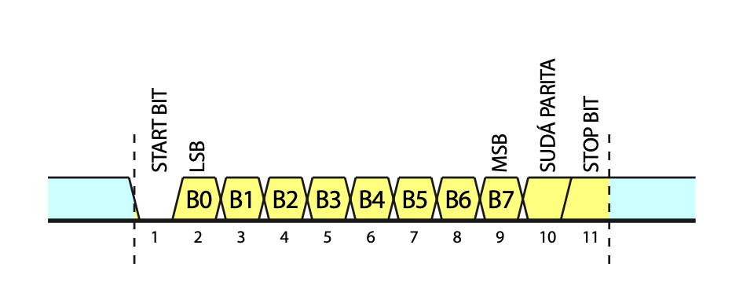
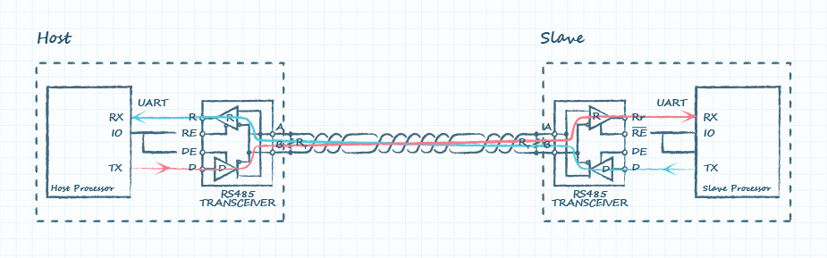
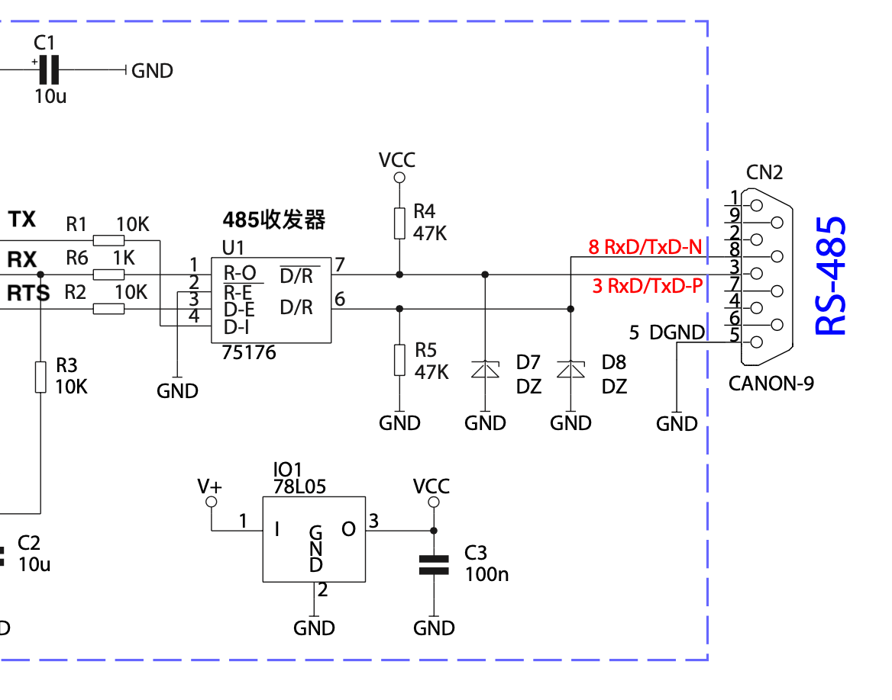
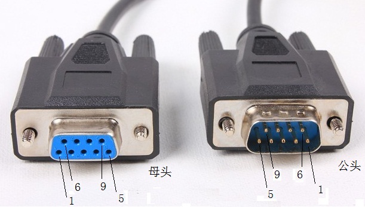

协议细节
Layer 1 物理层
物理层定义了对传输通道属性的要求。 MPI使用了
MPI使用UART 和RS485 来实现物理层的数据传输，
通用异步收发传输器（Universal Asynchronous Receiver/Transmitter，通常称为UART或串口），是一种异步收发传输器，将数据透过串列通信进行传输。UART通常用在与其他通信接口（如RS-485）的连接上。通用异步接受器-发送器(UART)把数据的字节按照比特顺序发送。另一端的UART把比特组装为字节。每个UART包含一个移位寄存器。通过一根线或其他介质的串行通信比通过多根线的并行通信具有更低成本。

MPI 协议规定数据帧格式为 1个开始位， 8个数据位，1个偶校验位，1个停止位，波特率有9.6K、19.2K 和 187.5K
RS-485 标准作为在物理层使用的选项，决定了通道的物理属性和总线上的数据编码。EIA-485(RS-485)只规范了信号发生器及接收器的电气特性，只建议了物理层，没有指定或是建议任何的通信协议.


在工业现场，MPI设备之间通过一个D型的9针母座与线缆相连接。

Layer 2 数据链路层
层二有以下四种消息类型
- SD4消息：用于令牌传递
- SD1消息：用于FDL状态查询，数据轮询和状态反馈
- SC消息：用于没有数据的应答
- SD2消息：用于数据请求和应答
SD4 消息
SD4：消息头（0xDC）
DA：目的地址
SA：源地址
SD1 消息
SD1：消息头（0x10）
DA：目的地址
SA：源地址
FC：帧控制
-- 请求：49（FDL查询），5C、7C（交替）
-- 应答：02（无资源），03（无服务）
-- FDL应答：00（从站），01（主站未就绪），02（主站已就绪） 03（主站已在令牌）
FCS：帧校验（DA到FC的数据和）
ED：帧结束（固定：0x16）
SC 消息
SC：短应答（0xE5）
SD2 消息
MPI 和 PPI的SD2 消息类型有所不同
SD2：消息头（0x68）
LE：长度
LEr：长度重复
DA：目的地址
SA：源地址
FC：帧控制，6C（首帧），5C、7C（交替）
DSAP：目的设备的服务点（SAP）
SSAP：来源设备的服务点
DataUnit：数据内容（层7信息）
FCS：帧校验（DA到DataUnit的数据和）
ED：帧结束（固定：0x16）